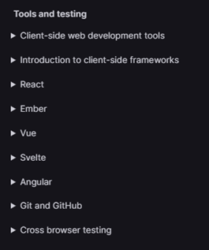

Voci comment j'ai mis en place ma veille sur le développement web. Ci-dessous tous les outils et les détails de leur utilisation pour la veille.
Google Alertes
Cet outil me permet de créer un flux rss sur le sujet choisi, ici développement web et technologies web. Chaque fois qu’une page traitant de ce sujet sera publiée sur internet je serai informé. J’ai choisi de créer un flux en Anglais car c’est dans cette langue que le plus de pages intéressantes apparaissent
Pour créer un flux il suffit d’entrer le nom dans la barre de recherche et de choisir dans les options, Envoyer à : Flux RSS.
Il est aussi possible de choisir le mode de tri des résultats, la langue, la région et les sources.
Une fois le flux créé on peut copier le lien et l’utiliser sur un agrégateur ou directement le consulter sur Google Alerts.
Agrégateur de flux RSS
Un agrégateur de flux RSS est un outil permettant de réunir des flux RSS sur une même page et de les manipuler pour optimiser sa veille. Ici l’outil utilisé est Netvibes que j’ai appris à utiliser lors d’un TP
en cours. Pour ajouter un flux à la page, il faut cliquer sur Ajouter > Reading app > coller le lien du flux dans la barre de recherche > choisir le flux, il sera ensuite possible de le retrouver sur la page principale. On peut créer des tableaux qui représentent une catégorie de veille et y mettre ses flux.
Pearltrees
Pearltrees est un outil qui permet de d’organiser et de partager des contenus numériques. Sur la page d’accueil sont affichées les collections qu’on a créés et celles auxquelles nous sommes abonnés.
Pour ajouter une collection à sa page d’accueil il faut un titre, une description si besoin, il est possible de choisir la vignette et les personnes avec qui on souhaite organiser cette collection.
Pour le cas du développement web, voici le détail de la mise en place de ma veille :
J’ai d’abord effectué des recherches sur Google pour voir si je pouvais récupérer des sites utiles. J’ai par exemple trouvé la documentation fournie par Mozilla sur le développement web, ce qui enveloppe, HTML, CSS, Javascript, et plus loin des outils et des Framework utiles.
Documentation développeurs de Mozilla Grâce à ce site, je peux me former est savoir si un nouvel outil ou une nouvelle mise à jour d’un langage sont sortis.
Mais ce n’est pas suffisant pour avoir une veille consistante.
Mon entreprise m’a fourni des sites utiles pour m’informer de l’actualité sur le développement web sur Notion.
Ces sites m’ont permis de m’autoformer et me permettent maintenant d’effectuer une partie de ma veille. J’ai donc choisi de les répertorier sur Pearltrees :
Pour, par exemple, le site javascript.info. Je crée une collection Javascript où je mettrai tous les sites d’apprentissage et de veille de ce langage.
Ensuite j’ajoute le site à ma collection :

Ainsi j’ai pu ajouter plusieurs sites :
Et quand on clique sur un site :
Cette page permet de donner un aperçu du site et d’y rediriger les utilisateurs.
’ai ensuite utilisé google pour rechercher des flux RSS sur le développement web. J’ai trouvé ce site qui liste plusieurs flux RSS : https://gafish.fr/veille-technologique-flux-rss/
J’ai récupéré les liens et les ai ajoutés à mon agrégateur Netvibes